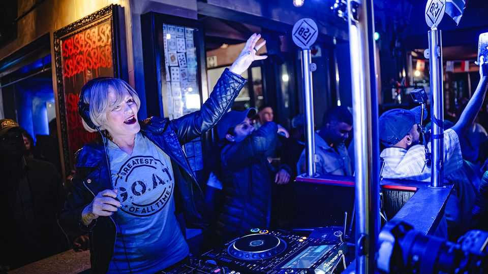

South Africa’s “white party” looks for more black votes
Local elections will highlight the ANC’s steep decline and the role of race in politics

Oct 29th 2026
AS PART OF her campaign to become mayor of Johannesburg, Helen Zille has snorkelled in a water-filled pothole. She has directed cars when power cuts turned off traffic lights. She has paddled down a flooded street. The candidate from the Democratic Alliance (DA), South Africa’s second-biggest party, has taken an old BMW “spinning”, a popular pursuit in the city’s black townships. The 75-year-old grandmother has stepped up to a turntable (pictured) and been dubbed “DJ Gogo”.
These were stunts with a purpose. Ahead of local elections on November 4th Ms Zille wants to highlight the decay of the commercial capital under a coalition led by the African National Congress (ANC). Polls suggest the once hegemonic party will have its worst showing in a nationwide election since the end of white rule in 1994. Meanwhile Ms Zille could soon be the first white mayor of post-apartheid Johannesburg. Such a result would underline the decline of the party of Nelson Mandela—and perhaps point to the beginnings of a less racialised politics.
The ANC has been losing support for 20 years. But it is heading for a new low. An average of opinion polls in the past six months has the ANC at 32%, the DA at 27%. Five years ago the ANC won 46% to the DA’s 22%. The DA’s own polling reckons it could become the largest party in most of South Africa’s eight largest cities.
Among the roughly 80% of the South African population that is black, the ANC remains the most popular party. It benefits from residual loyalty because of its role in ending apartheid, its patronage and because it genuinely improved the country during its early years in office. But South Africans are increasingly tired of its graft and failure to run basic services. Johannesburg, which sells itself as a “world-class African city”, is the most glaring example. Nearly half of the bulk water the city supplies is never paid for because it is stolen or leaks out of pipes. It spends more money than it raises in taxes and fees, yet it consistently fails to repair infrastructure. The cost of fixing its infrastructure backlog is roughly 25 times its capital budget.
“This is our last chance to save Johannesburg,” argues Ms Zille. Based on her experience running Cape Town from 2006 to 2009, she pledges to get a grip on the finances, appoint leaders to city agencies on merit and root out corruption.
Whether she gets the chance will depend on her ability to form a coalition. The DA usually benefits from “differential turnout”: its core base among whites and other minorities is more likely to vote than black voters are. But since black Joburgers make up around three-quarters of the city, she will need enough of their votes, too.
Will she get them? Most former ANC supporters either do not vote or opt for an opposition party other than the DA. UmKhonto we Sizwe (MK), led by Jacob Zuma, a former president, targets Zulus, the largest ethnic group. The Economic Freedom Fighters (EFF) is another black-nationalist party. Other urban voters are attracted by ActionSA, whose appeal is based partly on its ability to exploit concerns about illegal immigration. “A country without order is headed for disaster,” says Sanele Bhagathi, a voter from Johannesburg.
Many black South Africans are DA-curious but have resisted it because, fairly or unfairly, the DA’s brand is that of a “white party”. Sceptics see Cape Town, which is well run but has bleak mostly non-white outskirts, as a reason for caution. “I don’t believe the party cares enough about [that inequality], and they should,” says Thabo Nthuli, another voter in Johannesburg.
Yet governing in coalition with the ANC at a national level has helped detoxify the DA’s image and reaffirmed its reputation for competence. It is hard for opponents to suggest that the likes of Ms Zille want to bring back apartheid—a trope of the ANC—when as a journalist under white rule she exposed the regime’s abuses.
For many black voters Cape Town is a model of good governance. “I never used to have these problems or these failures,” says Mandisa Maphisa, who moved to Johannesburg from there. “I’ll be voting for the DA for effective service delivery that the party itself has proven is possible.”
The DA thinks it will double its share of the black vote, from around 4.5% to 9% nationally, meaning it could be the third-most popular party among black South Africans. Ms Zille will probably win a higher share, though she may not meet her target of 40% of the overall vote.
The shift away from the ANC suggests that politics is beginning to catch up with society. Most South Africans say they do not mind the race of their neighbour, their sons- or daughters-in-law or the president. In a survey published in April, 70% agreed that politicians use race and colonialism as an excuse for their own failures.
An increasingly diverse middle class shapes politics, too. In 2012 black households made up 29% of those with at least 75,000 rand ($4,500) in monthly income, notes the Liberty Institute, a research group at the University of Cape Town. By 2024 they had caught up with whites (41%). The share of multiracial marriages increased from 1% to 11% between 2001 and 2022. More South Africans socialise with people of other races than in the 2000s.
There is no guarantee that Ms Zille will end up as mayor. But if she can win over enough black voters to form a coalition in Johannesburg, that will draw “a line in the sand”, says William Gumede, an academic. “To get the South Africa we want, we need more blacks to cross the racial barrier.” ■
Sign up to the Analysing Africa, a weekly newsletter that keeps you in the loop about the world’s youngest—and least understood—continent.